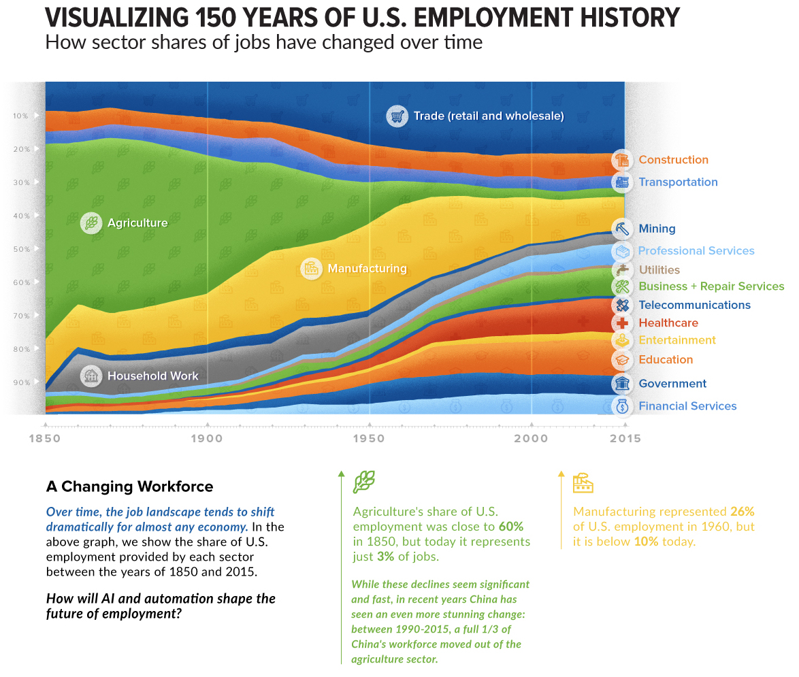
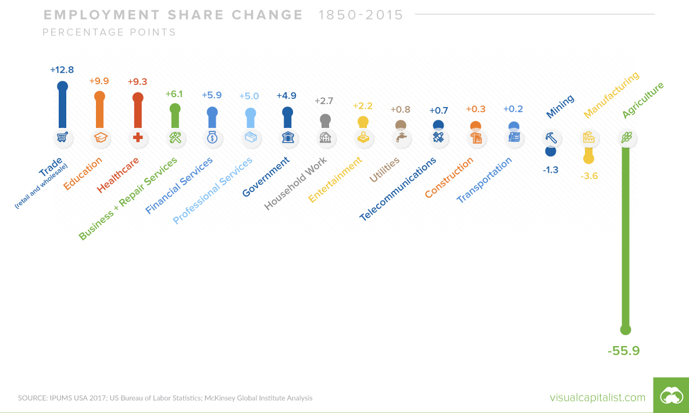
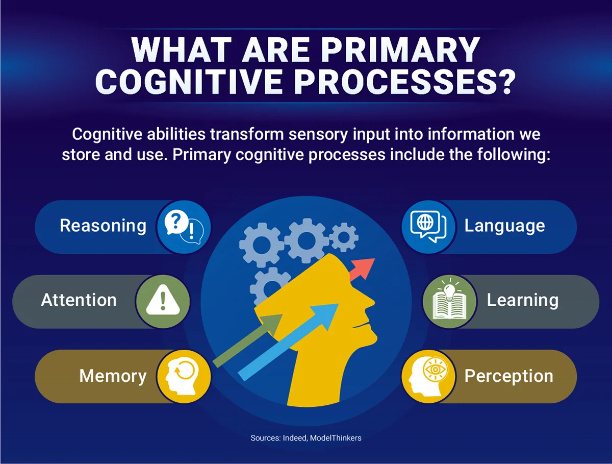
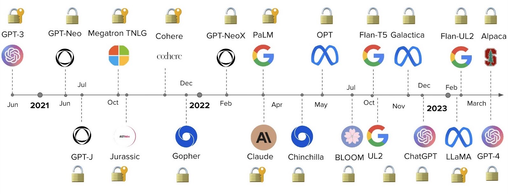

Automation or Augmentation? AI and the Future of Work.
I for one welcome our new robot overlords…
10/5/23
HISTORICAL PATTERNS
AUTOMATION OF PHYSICAL LABOR
Many of the changes in the distribution of labor across sectors have been driven by changes in the efficiency of human labor, which can be considered as the ratio of production to cost.
Force Multiplier: An external tool or resource that allows you to do more work with less effort.1 This might increase production of a single worker, reducing the overall number of workers needed to perform a job.
Outsourcing: Outsourcing refers to the business practice of contracting out certain tasks or functions to third-party service providers instead of performing them in-house. One of the primary reasons companies outsource is to achieve cost reductions. Labor, infrastructure, or operational costs might be lower in another location or with a specialized provider.
A CLOSER LOOK
What are common features of the sectors that displaced Agriculuture and Manufacturing?

- The tasks are Place Bound.
- The sectors feature a lot of Knowledge Work.
KNOWLEDGE WORK?
Knowledge work 1 involves jobs and tasks that are primarily information-based and Cognitive in nature :
- Intellectual Activity: It involves thinking, analyzing, and processing information more than manual labor.
- Non-routine: It doesn’t necessarily follow a set script or routine, and often involves problem-solving, decision-making, and creative thinking.
- Information-based: The main tools of a knowledge worker are information and knowledge, as opposed to physical tools or machinery.
- Driven by Expertise: Knowledge workers often have specific areas of expertise, education, or training that they draw upon to do their jobs.
- Autonomy: Knowledge workers often have a degree of autonomy in terms of how they approach and solve problems.
- Continuous Learning: The dynamic nature of information and the fields in which knowledge workers operate necessitates continuous learning and adaptation.
- Outcome-focused: The value of knowledge work is often measured by outcomes or results rather than the hours worked.
- Software developers
- Managers
- Analysts
- Consultants
- Designers
- Scientists
- Lawyers
- Doctors
- Educators
HUMAN COGNITION

- Intellectual Activity: It involves thinking, analyzing, and processing information more than manual labor.
- Non-routine: It doesn’t necessarily follow a set script or routine, and often involves problem-solving, decision-making, and creative thinking.
- Information-based: The main tools of a knowledge worker are information and knowledge, as opposed to physical tools or machinery.
- Driven by Expertise: Knowledge workers often have specific areas of expertise, education, or training that they draw upon to do their jobs.
- Autonomy: Knowledge workers often have a degree of autonomy in terms of how they approach and solve problems.
- Continuous Learning: The dynamic nature of information and the fields in which knowledge workers operate necessitates continuous learning and adaptation.
- Outcome-focused: The value of knowledge work is often measured by outcomes or results rather than the hours worked.
HUMAN COGNITIVE LABOR2
Aspects of human cognitive labor:
- Problem Solving: Identifying complex issues and reviewing related information to develop and evaluate options and implement solutions.
- Decision Making: Considering the relative costs and benefits of potential actions to choose the most appropriate one.
- Analysis: Examining data or information and breaking it down to understand its structure, trends, or implications.
- Learning and Adaptation: Acquiring new knowledge and skills and adjusting to new information or circumstances.
- Creativity: Generating new ideas, concepts, or solutions.
- Planning: Determining how a system or operation should work and how changes in conditions, operations, and environments will affect outcomes.
- Communication: Conveying information effectively, both verbally and in writing. This also includes the ability to listen and understand information from others.
- Emotional Intelligence: Recognizing, understanding, and managing our own emotions while also recognizing, understanding, and influencing the emotions of others.
SOME EXAMPLES
Here is a contract and our contract guidelines. Review and red-line the contract.
Does this Animal Care protocol conform to the federal guidelines?
I have a fever and a cough. What is wrong with me?
Gather data from these documents and summarize/analyze it.
How does this job applicant align with the needs described in our job description?
These tasks are difficult to automate because their inputs are complex, unstructured, and highly variable. They require human Cognitive Labor.
AUTOMATION OF COGNITIVE LABOR
“The future is already here — it’s just not very evenly distributed.” 3
ARTIFICIAL INTELLIGENCE
2022: A TIPPING POINT
GENERATIVE AI
Generative Artificial Intelligence describes a group of algorithms or models that can be used to create new content, including text, code, images, video, audio, and simulations.
Examples:
ChatGPT: Text to Text Generative Pretrained Transformer with a chat interface
MidJourney: Text to Image
an abstract representation of an unemployment line caused by the emergence of artificial general intelligence, glowing blue computational network, photorealistic, dark technology, dark academia
KaiberAI: text to video
A Dystopian cyberpunk future where humans battle against cybernetic abominations from the works of the Lovecraftian Cthulhu Mythos. in the style of Photo real, hyper-realistic, high dynamic range, rich colors, lifelike textures, 8K UHD, high color depth, Nikon D 850, Kodak Portra 400, Fujifilm XT
Mubert: text to music.
Hardtechno Dark John Carpenter Synth
::: {column width=“60%”}
LARGE LANGUAGE MODELS (LLM)
A type of AI model designed to understand and generate human-like text.
::: {.panel-tabset}
Key Characteristics
- Model Type: Subset of deep learning within machine learning.
- Architecture: Commonly based on the Transformer architecture.
- Size: Contains billions to trillions of parameters.
Training and Capabilities
- Training Data: Trained on vast datasets, including books, articles, and web content.
- Functionality: Generates coherent text, answers questions, translates, summarizes, and more.
- Transfer Learning: Fine-tuned on specific datasets for specialized tasks.
Limitations
- Generates based on training data patterns.
- Doesn’t “understand” like humans.
- Can produce incorrect or nonsensical answers.
- Influenced by biases in training data.
CAPABILITIES

TASKS ARE OPERATIONS
Human Cognitive Tasks
Input Human Output
LLM Operations
Prompt Model Response
LLM OPERATIONS
Reductive
Take a large amount of text and produce a smaller output.
Input is larger than the output.
Transformative
Transmute the input into a new format.
Input and output are roughly the same size and/or meaning.
Generative
Generate a large amount of text from a small set of instructions or data.
Input is smaller than the output.
REDUCTIVE OPERATIONS
Take a large amount of text and produce a smaller output.
- Summarization: Say the same thing with fewer words. -Can use list, notes, executive summary.
- Distillation: Purify the underlying principles or facts. -Remove all the noise, extract axioms, foundations, etc.
- Extraction: Retrieve specific kinds of information. -Question answering, listing names, extracting dates, etc.
- Characterizing: Describe the content of the text. -Describe either the text as a whole, or within the subject.
- Analyzing: Find patterns or evaluate against a framework. -Structural analysis, rhetorical analysis, etc
- Evaluation: Measuring, grading, or judging the content. -Grading papers, evaluating against morals
- Critiquing: Provide feedback within the context of the text. -Provide recommendations for improvement
Transformation Operations
Transmute the input into another format. Input and output are roughly the same size and/or meaning.
- Reformatting: Change the presentation only.
- Prose to screenplay, XML to JSON
- Refactoring: Achieve same results with more efficiency.
- Say the same exact thing, but differently
- Language Change: Translate between languages.
- English to Russian, C++ to Python
- Restructuring: Optimize structure for logical flow, etc.
- Change order, add or remove structure
- Modification: Rewrite copy to achieve different intention.
- Change tone, formality, diplomacy, style, etc
- Clarification: Make something more comprehensible.
- Embellish or more clearly articulate
Generative Operations
Generate a large amount of text from a small set of instructions or data.
- Drafting: Generate a draft of some kind of document.
- Code, fiction, legal copy, KB, science, storytelling
- Planning: Given parameters, come up with plans.
- Actions, projects, objectives, missions, constraints, context.
- Brainstorming: Use imagine to list out possibilities.
- Ideation, exploration of possibilities, problem solving, hypothesizing
- Amplification: Articulate and explicate something further.
- Expanding and expounding, riffing on stuff
CRITICAL DETAILS
Prompt
What are the characteristics of your task?
Operation Type: Reductive, Transformative, or Generative? Size: Tokens How much information do you need to send to the model? Context: What other relevant information/data is required? Where is it? Format: Text only? File uploads? .pdf, .csv, .json, .docx, .xlsx, .pptx, .jpg, .png, etc Quality: Prompt Engineering
Model
There are a TON of different Models and they vary substantially.
Size Cost Security Context Window Input Types Training Data Type: Conversational Agent vs Task Oriented Agent Specificity/Flexibility License
Response
How do evaluate the quality of the response?
Accuracy Consistency Creativity Size Format Specificity
LATENT CONTENT
Knowledge, facts, concepts, and information that is “embedded” in the model and must be “activated” by correct prompting.
Latent content only originates from Training Data.
Examples:
- World Knowledge: General facts and understanding of the world.
- Scientific Information: Embedded data on scientific principles.
- Cultural Knowledge: Information on cultures and social norms.
- Historical Knowledge: Data on past events and figures.
- Languages: Language structures, vocabulary, and syntax.
EMERGENT CAPABILITIES
The abilities of Large Language Models (LLMs) that arise as a result of their extensive training on vast datasets, even if those capabilities were not explicitly “taught” or “programmed” into the model. These capabilities emerge as a byproduct of the model’s architecture and the sheer volume of data it’s been exposed to.
Unintended Abilities: Emergent capabilities might lead the model to perform tasks it wasn’t explicitly trained for. For example, an LLM might be trained on general text but can still translate between languages, write in different styles, or even generate code.
Beyond Training Data: While LLMs are trained on specific data, the patterns they recognize can be generalized to a variety of tasks. This generalization can sometimes lead to surprising and useful outputs, as well as unintended or harmful ones.
Complex Interactions: The interactions between the numerous parameters in LLMs can lead to behaviors that aren’t immediately predictable from the training data alone. These behaviors arise from the complex, multi-dimensional relationships the model has learned.
Potential and Pitfalls: Emergent capabilities can be both an asset and a liability. On one hand, they showcase the flexibility and adaptability of LLMs. On the other, they can result in outputs that are unexpected, inaccurate, or even biased.
Example - Metaphor Understanding: While not explicitly trained to understand metaphors, an LLM might still be able to interpret and generate metaphoric language due to its exposure to diverse linguistic constructs in its training data.
Example - Creativity: LLMs can generate creative text, poetry, or stories. While they don’t “understand” creativity in the human sense, their vast training allows them to mimic creative constructs.
Limitations: Despite their emergent capabilities, LLMs have limitations. They don’t truly “understand” concepts in the way humans do, and their outputs are entirely based on patterns in the data they’ve seen.
HALLUCINATION
Instances where the model generates information that is not accurate, not based on its training data, or simply fabricated. Essentially, the model “hallucinates” details that aren’t grounded in reality or the facts it has been trained on.
Origin of the Term: The term “hallucination” is borrowed from human psychology, where it refers to perceiving things that aren’t present in reality. When applied to LLMs, it captures the idea that the model sometimes produces outputs that aren’t reflective of real facts or the content it was trained on.
Causes: Hallucinations can be caused by various factors, including the model misinterpreting the input, over-generalizing from its training data, or trying to complete ambiguous queries with details it “invents” on the spot.
Common in Open-ended Queries: LLMs are more prone to hallucinate when given open-ended prompts or when there’s a lack of specific context. In these situations, the model might fill in gaps with fabricated details.
Concerns: Hallucinations are a concern, especially when users rely on LLMs for accurate information. They highlight the importance of treating outputs from LLMs as suggestions or starting points rather than definitive answers.
Mitigation: Efforts to mitigate hallucinations in LLMs include refining model architectures, improving training data, and employing post-training fine-tuning or validation processes. Additionally, user feedback and iterative development are crucial for identifying and reducing such issues.
AUTOMATION OF COGNITIVE LABOR
Tasks are Operations
Complex job functions are often a series of tasks.
Treat each task as an information problem.
- You have various information needs for each process or task
- Information comes from various sources
- You perform different transformations on the information
Define each task in terms of Operations.
- Shrinking: Summarization, extraction, classification
- Translation: Changing from one format to another
- Expanding: Brainstorming, synthesizing, drafting
Prompt Engineering: The creation of the prompt is carefully engineered to provide optimal instructions and context to the LLM. Factors like tone, point of view, and conversational style help steer the LLM’s response.
Model Selection: Huggingface.co currently features 350,247 models and they have a leaderboard for performance!
Evaluate the response(s) against data you trust.
EXAMPLES
Award Letter (Extraction)
PDF Grey Literature (Extraction)
Contract Review (Evaluation)
others
Concerns
AGI
Latent Content and Emergent Properties
Blooms Taxonomy
A hierarchical model to classify educational learning objectives into varying complexity and specificity. Remembering: Recalling facts and concepts. Retrieval and regurgitation Understanding: Explaining ideas and concepts. Connecting words to meanings. Applying: Using information in new situations. Functional utility Analyzing: Drawing connections among ideas. Connecting the dots between concepts. Evaluating: Justifying a decision or action. Explication and articulation Creating: Producing new or original work. Generating something that did not previously exist.
Resources
Sources Venn.
Technical
https://www.youtube.com/@samwitteveenai
Philosophical
https://www.youtube.com/@4IR.David.Shapiro
Consumer
https://www.youtube.com/@mreflow
https://www.futuretools.io
https://snorkel.ai/large-language-models-llms/
https://www.mckinsey.com/mgi/our-research/generative-ai-and-the-future-of-work-in-america
https://thehill.com/opinion/congress-blog/3913530-artificial-intelligence-is-not-going-to-take-all-our-jobs/
https://arxiv.org/abs/2303.10130
https://www.analyticsvidhya.com/blog/2023/07/the-fascinating-evolution-of-generative-ai/
https://kyleake.medium.com/data-behind-the-large-language-models-llm-gpt-and-beyond-8b34f508b5de
https://arxiv.org/pdf/2303.08774.pdf
https://www.fiddler.ai/blog/the-missing-link-in-generative-aimonit
https://www.fiddler.ai/blog/the-missing-link-in-generative-ai
https://www.mckinsey.com/featured-insights/mckinsey-explainers/what-is-generative-ai
https://www.nvidia.com/en-us/glossary/data-science/large-language-models/
https://blogs.nvidia.com/blog/2023/01/26/what-are-large-language-models-used-for/
https://www.promptengineering.org/what-are-large-language-model-llm-agents/
brobison@uidaho.edu